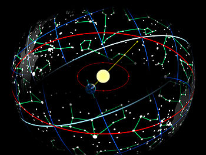
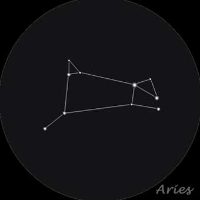
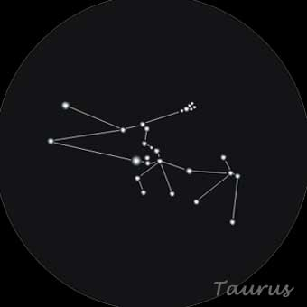

In astronomy, the term constellation actually regers to the area within a boundry drawn around that section of the sky, not the actual group of stars recognizable to the naked eye (Astronomers call them asterisms). Many-if not most-constellations contain asterisms of the same name.
The constellations serve us a sort of map; we have assigned every star visable from Earth to a constellation. Other space phenomena are assigned to constellations as well-an astrophysicist might refer to a "nebula in the constellation of Taurus". Even though we can't see these deep-space objects with our naked eye, we can locate the boundaries of their constellations.
The unique path drawn across the sky by the planets and the moon at night, and by the sunduring the day, is called the ecliptic. I foyu traced an imagenery line across that path on a star map, it would cross through thirteen constellations: Aries, Taurus, Gemini, Cancer, Leo, Virgo, Libra, Scorpio, Ophiuchus, Saggitarius, Capricorn, Aquarius and Pisces. All but Ophiuchus, which only barely touches the ecliptic, are fimiliar to us as the twe;ve signs of the Western astrology, and are also known as the constellations of the zodiac.
The Zodiac
Some other interesting constellations
Aries is depicted in Ptolemy's system as a ram, and Ancient Engyptian astronomy associated it with a ram-headed god. Ptolemy was likely influenced by these depictions, but Aries has also been said to represent the ram with golden fleece that Jason and the Argonauts quested for in Greek mytgology. The constellation Aries contains a number of distant galaxies, including some so close to one another that their gravitational fields have started to collide(the same way our Milky Way galaxy might one day collide with our neighbouring galaxy Andromeda). Aries' brightest star is Alpha Arietis. Its alternative name, Hamal, comes from the Arabic for "the head of the ram".
Taurus is usually shown on star maps head-on, with only his front legs, chest, and head visible. It is home to two prominent star clusters: the Pleiades and the Hyades. The Pleiades, also called the Seven Sisters, form the star cluster most visible to the naked eye(the seven stars where once considered a constellation). The Hyades were the five daughers of Atlas-the Titan who carried the world on his shoulders in Greek mythology-and half-sisters to the Pleiades. Taures' brightest star is Alpha Tauri, or Aldebaran, comes from the Arabic word for "to follow", because Aldebaran rises and sets after the Pleiades, following them across the sky.
